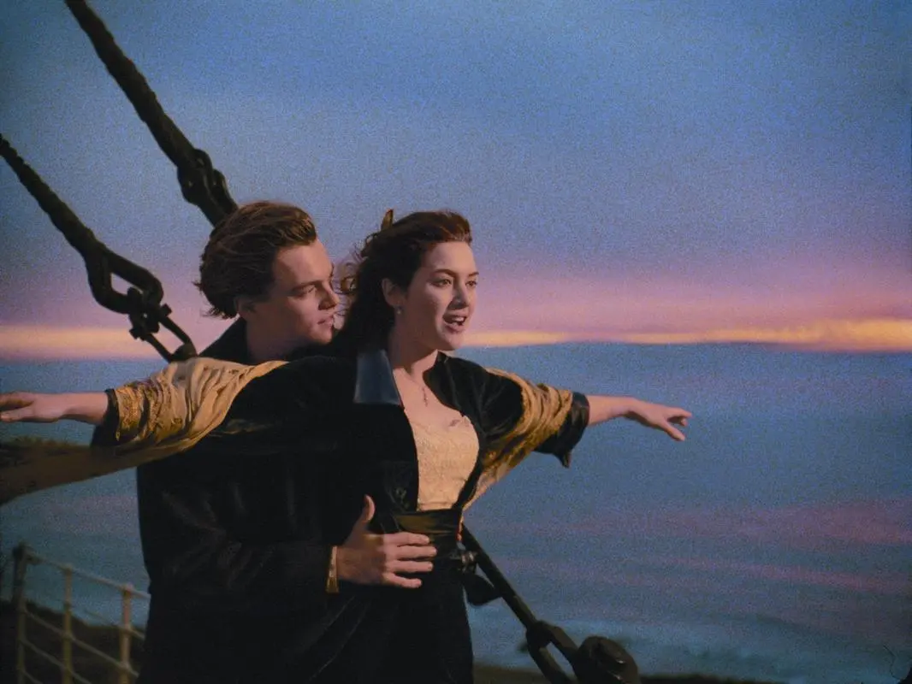

泰坦尼克号

概况
导演: 詹姆斯·卡梅隆
制作人: 詹姆斯·卡梅隆 / 格兰特·希尔 / Pamela Easley
主演: 莱昂纳多·迪卡普里奥 / 凯特·温斯莱特 / 比利·赞恩 / 格劳瑞亚·斯图尔特
类型: 剧情 / 爱情
制片国家/地区: 美国
语言: 英语
上映日期: 1997年12月19日(美国)
片长: 194分钟
剧情简介
1912年4月10日，号称 “世界工业史上的奇迹”的豪华客轮泰坦尼克号开始了自己的处女航，从英国的南安普顿出发驶往美国纽约。年轻的贵族少女罗丝·迪威特布克特（凯特·温斯莱特 饰）与母亲及未婚夫卡尔坐上了头等舱；另一边，放荡不羁的少年穷画家杰克·道森（莱昂纳多·迪卡普里奥饰）也在码头的一场赌博中赢得了下等舱的船票。 罗丝·迪威特布克特厌倦了上流社会虚伪的生活，不愿嫁给卡尔，打算投海自尽，被杰克·道森救起。很快，美丽活泼的罗丝·迪威特布克特与英俊开朗的杰克·道森相爱，杰克·道森带罗丝·迪威特布克特参加下等舱的舞会、为她画像，二人的感情逐渐升温。然而却在4月14日的夜晚，泰坦尼克号撞上了冰山，“永不沉没的”泰坦尼克号面临沉船的命运，罗丝·迪威特布克特和杰克·道森刚萌芽的爱情也将经历生死的考验，最终不得不永世相隔
出自《泰坦尼克号》的经典歌曲《我心永恒》